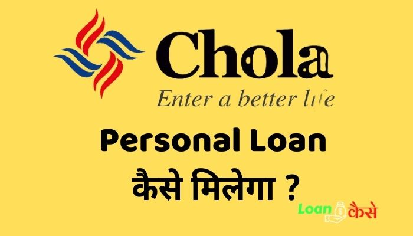
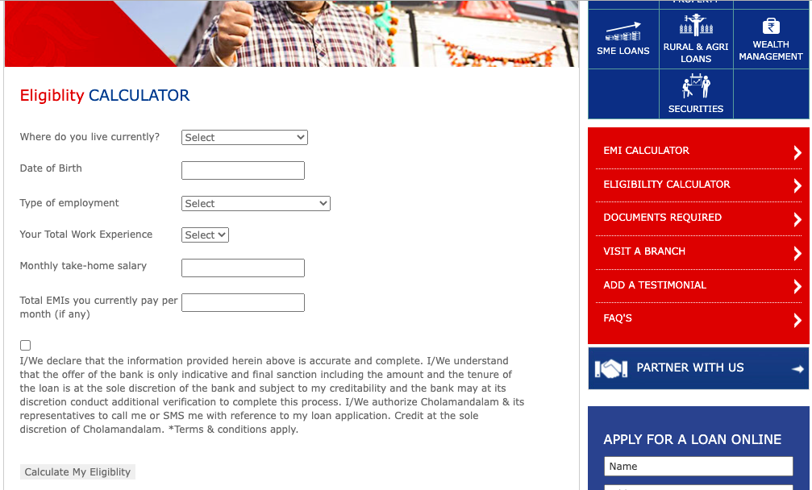

दोस्तों अगर आप cholamandalam finance personal loan kaise milega ये जानना चाहते है ,तो आप सही जगह आए है । यहाँ आप cholamandalam finance personal loan से related सभी Information हिंदी में ले पाएँगे जैसे कि cholamandalam finance personal loan interest rate ,cholamandalam finance personal loan eligblity कैसे चेक करें । यानी की आपको cholamandalam Personal loan से reated complete गाइड यह हम करने वाले है ।

Cholamandalam Finance Personal Loan क्या है ?
{kind=link}
चोला finance का पूरा नाम Cholamandalam Investment & Finance Company Limited (CIFCL),इसका कार्यालय Chennai में है Cholamandlam और finance company के तरह हि customers को Loan देने वाली एक कम्पनी है ।cholamandalam finance Personal कामों के लिए भी किसी व्यक्ति को लोन देती है इस Loan को cholamandalam finance personal Loan के नाम से जाना जाता है ।Cholamandalam Finance Personal Loan से लिए गए पैसे को आप किसी भी कम के लिए use कर सकते है।
Cholamandalam Finance Personal Loan Eligibility Kaise check Karen?
- सबसे पहले आपको Cholamandalam Finance के वेब्सायट पर जाना है । वहाँ पर आपको eligibility calculator मिलेगा।

- यहाँ पर आपको कुछ डिटेल डालने के लिए बोला जाएगा ,इसमें मुख्य रूप से आपके income के बारे में ये जानना चाहता है और आप जो Income इसमें डालते है उसी के basis पर आपको Loan अमाउंट show करता है ।की आप कितना तक का loan ले सकते हैं ।
{kind=link}
cholamandalam finance personal loan application Document Require
For Individual (व्यक्तिगत के लिए )
- Identity Proof:- पासपोर्ट (Valid Passport), मतदाता पहचान पत्र (Voter identity card), Valid PAN card Valid driving license Ration card with photo, Bank passbook with photo attested and latest statement Pensioner ID Copy Employee photo ID card issued by Govt ESIC medical cards with photo Registered property documents with photograph Any other government-issued ID proofs like post office ID card UID (Aadhar) – Unique Identity card(इनमें से कोई एक चलेगा )
- Address Proof:- Valid passport, Voter identity card, Valid driving license, Latest property tax receipt, ( छः महीने से ज़्यादा पुराना नहीं होना चाहिए ) Ration card, नया Telephone bill – landline and postpaid mobile bills (छः महीने से पुराना नहीं होना चाहिए) Latest Utility bills( छः महीने से पुराना नहीं होना चाहिए) including Electricity bill, Gas bill or New Gas card Bank account statement (छः महीने से पुराना नहीं होना चाहिए) इसके अलावे कोई और भी सरकारी Document जो सरकार के द्वारा निर्गत किया गया हो । (इनमें से कोई एक चलेगा )
Cholamandalam finance personal loan kaise milega?
Cholamandalam Finance Personal Loan लेने के लिए आपको सबसे पहले अपना eligiblity चेक कर लेना है उसके बाद ऊपर बताए गए documents ready रखना है ।और तब जाकर आपको नीचे के स्टेप्स फ़ॉलो करने है ।
Cholamandalam finance personal loan application process
- Cholamandalam Finance Personal Loan लेने के लिए आपको Cholamandalam Finance के Website पर फिर से जाना है ।और जहाँ पर आपने eligiblity चेक कर था वही पर नीचे दाहिने साइड में आपको मिलेगा एक फ़ॉर्म जिसमें लिखा होगा Apply for a Loan उस form को सही सही भरकर submit कर देना है ।
- कुछ समय बाद आपको Cholamandalam Finance Personal Loan के टीम की ओर से कॉल आएगा उसके बाद आपसे कुछ information लिया जाएगा ।और sabhi documents सही होने के बाद aapko Cholamandalam Finance Personal Loan मिल जाएगा ।
cholamandalam finance personal loan interest rate kya hai ?
cholamandalam finance personal loan lene से पहले आपको इसके cholamandalam finance personal loan ke rate of interest को जानना बेहद ज़रूरी है ,इसका रटे ओफ़ इंट्रेस्ट :10-17 % तक लिया जाता है ।
Cholamandalam finance personal loan EMI kaise check karen .
- अभी तक तो आप समझ गए होंगे की cholamandalam finance personal loan के homepage पर कैसे जाना है ,
- homepage पर जाने के बाद राइट side में आपको एक EMI calculator का तब मिलेगा ।
- यह आप Loan Amount ,Rate of interest और tenure select करके अपना emi (estimated monthly Installment )चेक कर सकते हैं।
तो दोस्तों आज आपने जाना की cholamandalam finance personal loan application process क्या hai ,cholamandalam finance personal loan kaise milega ,eligiblity कैसे चेक करें । मुझे उम्मीद है की आपको ये पोस्ट काफ़ी पसंद आया होगा।अगर पसंद आया है तो अपने दोस्तों के साथ शेर करें ।
Cholamandalam finance का Rate Of इंट्रेस्ट क्या है?
कम से कम १०% और अधिक से आदिक १७% Interest आपको लगने वाला है।
Cholamandalam finance लोन कहा मिलेगा?
इसके लिए आपको Cholamandalam finance के official website पर जाना है या किसी नज़दीकी chola के ऑफ़िस में जाना है।